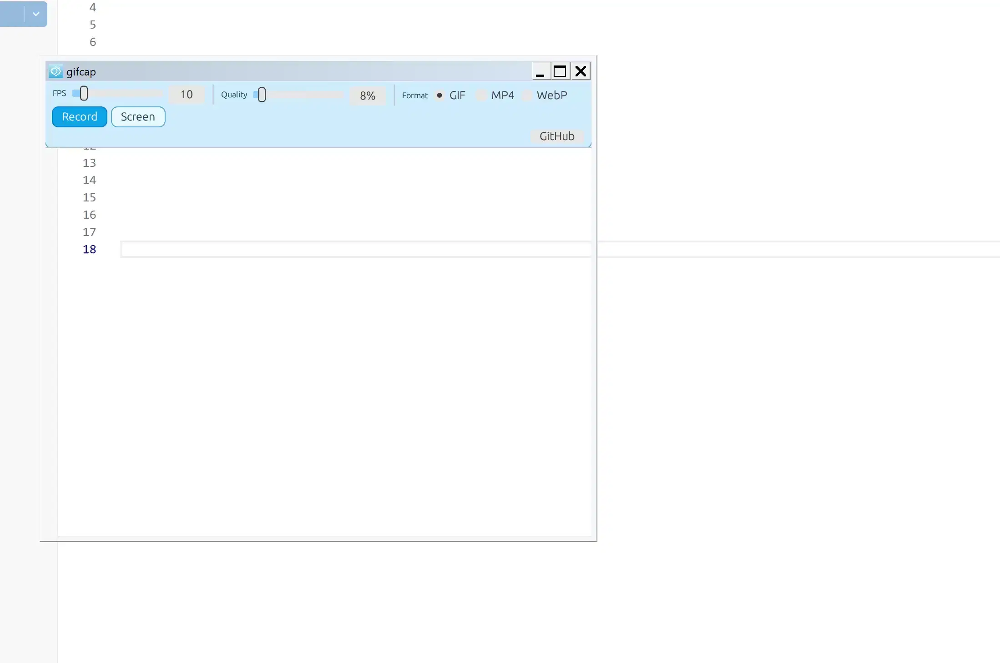

Preview

Downloads
- gifcap.exe
-
048182f2bb4568104686e6e800a74449c619bcf24d4cc3eee32fed5a02e263f5 - gifcap-slim.exe
-
2bd355ed62c191ada0a858bfa963780f6a0d8044439b794705d730a487bc7302
Changelog
- v1.1 - Added
Fullscreen Recordmode with tray-only stop. - v1.1 - Added
Move Up/Downto quickly dock the toolbar panel to top or bottom. - v1.1 - UI labels and website are now fully in English.